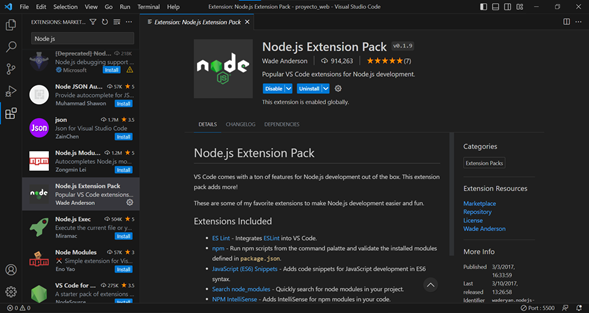

| Contenido | |
|---|---|
| Propósito de la plataforma | Proceso de instalación |
| Video de instalación (Auxiliar) | Evidencia de instalación |
Node.js es una plataforma de desarrollo de aplicaciones basada en el motor JavaScript V8 de Google Chrome. Su propósito principal es permitir a los desarrolladores crear aplicaciones de red rápidas y escalables utilizando JavaScript tanto en el lado del cliente como en el lado del servidor. Node.js utiliza un enfoque de E/S sin bloqueo y orientado a eventos, lo que lo hace eficiente y adecuado para aplicaciones en tiempo real y basadas en API.
Para instalar Node.js, sigue estos pasos:
node -v (para verificar la
versión de Node.js) y npm -v (para verificar la versión de NPM).En este video se explica el proceso de instalación de Node.js:
Esta es mi evidencia de Instalación
